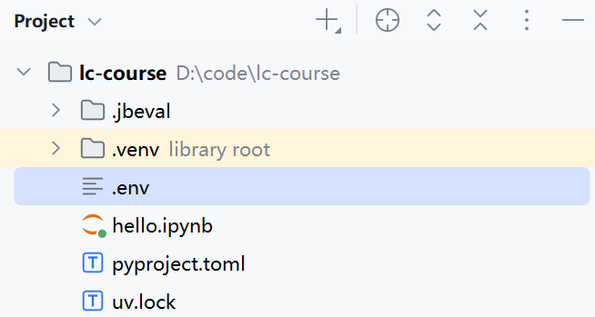

OpenAI
正在读取本章记录下次复习：—
请通过“启动学习站.cmd”进入，才能写入数据库。
OpenAI作为全球最早，也是最火的大模型公司之一，占据了先发优势。因此其制定的API规范几乎成为了大模型API的默认规范，几乎所有的大模型API都兼容OpenAI的规范。
在任何模型的官方文档中都能看到基于OpenAI提供的SDK的代码示例，例如DeepSeek：
https://api-docs.deepseek.com/zh-cn/
本节我们来学习如何使用OpenAI提供的SDK工具来访问大模型。
基本使用
首先，我们需要安装OpenAI的SDK，以python为例：
- 使用pip安装：
pip install openai
- 使用uv安装：
uv add openai
接下来，就可以使用SDK调用任何兼容OpenAI规范的模型了，只要将base_url和api_key设定为对应的模型提供者的url和api_key即可：
from openai import OpenAI
client = OpenAI(
api_key="sfxxxxx",
base_url="https://api.deepseek.com"
)
print("🚀 正在调用大模型...")
response = client.chat.completions.create(
model="deepseek-chat",
messages=[
{"role": "system", "content": "你是一名友好的AI助教。"},
{"role": "user", "content": "你好，你是谁?"}
],
stream=False
)
print(response)
环境变量
将api_key直接写在代码中非常危险，所以通常我们都将其写入环境变量，程序运行时加载。
第一步，配置环境变量。
在项目根目录创建一个.env文件：

在其中配置自己的API_KEY，我们以Deepseek为例：
*# deepseek*
DEEPSEEK_API_KEY=sk-1234567890
*# 阿里云*
DASHSCOPE_API_KEY=sk-1234567890
第二步，安装python-dotenv。
在项目中，我们通过python-dotenv库来读取环境变量，所以要先安装依赖。
uv add python-dotenv
安装成功后，会在pyproject.toml中看到新添加的依赖：
[project]
name = "lc-course"
version = "0.1.0"
description = "Add your description here"
requires-python = ">=3.13"
dependencies = [
"notebook>=7.5.5",
"openai>=2.28.0",
"python-dotenv>=1.2.2",
]
第三步，读取环境变量。
最后，我们就可以在代码中读取环境变量了：
from openai import OpenAI
from dotenv import load_dotenv
import os
*# 加载环境变量*
load_dotenv()
client = OpenAI(
api_key=os.getenv("DEEPSEEK_API_KEY"),
base_url="https://api.deepseek.com"
)
print("🚀 正在调用大模型...")
response = client.chat.completions.create(
model="deepseek-chat",
messages=[
{"role": "system", "content": "你是一名友好的AI助教。"},
{"role": "user", "content": "你好，你是谁?"}
],
stream=False
)
print(response)